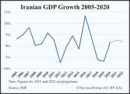

There were plenty of politicians that aided the US to continue the process of sanctions. The Department of State’s Office of Economic Sanctions Policy and Implementation, Jimmy Carter, Ronald Regean, Bill Clinton, George Bush, Barack Obama, Donald Trump,
countries such as Russia, US Congress, Shah Mohammad Reza Pahlavi. The sanctions were sent from the US to Iran, including overseas. Iran had been the most affected from the operation as their nuclear production had significantly dropped, and
their main source of income was oil, which was also reduced, hence economic sanctions. The sanctions had started in 1979 to present day by the US after hearing that Iran’s nuclear production was getting out of hand.
US Imposed sanctions on Iran due to its nuclear proliferation activities. Radical students had seized the American Embassy in Tehran and took hostages. President Carter imposed an escalating series of sanctions, beginning with a ban on Iranian oil imports,
followed by blocking all $12 billion of Iranian government assets in the United States. In 1996, Congress passed the Iran and Libya Sanctions Act, (ILSA) which restricted foreign companies from importing oil and gas from Iran, which was
the main source of the Iranian government's income.

The Carter Administration.
The UN officials disagreed on the official reason why they imposed sanctions on Iran, but many believe it was to stop Iran participating in nuclear activities. In 2013 the UN officials started to discuss compromises for Iran to stop building
nuclear weapons. Neighboring countries were told to stop trading oil with Iran, said by Clinton, due to the excessive production of nuclear weapons. The UN and US have set a precedent to curb Iran's use of nuclear energy to build weapons
of mass destruction possessed by Iran. These sanctions were needed to ensure that no country grew so powerful that it became a threat to the international community in the event of a war. As a consequence of the economic sanctions imposed
on Iran their GDP growth decreased by around 2 percent a year. The sanctions on Iran have prompted many oil companies to stop trading with Iran and have also caused a decline in oil production due to reduced access to technologies needed
to improve their oil production efficiency.

Iran's GDP Growth/Decline
during the sanctions.
"This resolution will put in place the toughest sanctions ever faced by the Iranian government ... It sends an unmistakable message about the international community's commitment to stopping the spread of nuclear
weapons."
- Presidant Barak Obama, 2010